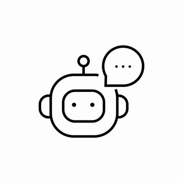

Chatbot :LLM-Powered YouTube Video Q&A with Context-Based Answers from Transcripts by Using RAG
Niladri Ghosh
1*
,
1
Ramakrishna Mission Vivekananda Educational and Research Institute (RKMVERI)
Video
Code
Key Features
Search Chats Instantly:
keyword-based search over past conversations stored in ChromaDB.
YouTube Transcript Q&A:
ask questions about a video's transcript using Retrieval-Augmented Generation.
LangChain-powered RAG:
transcripts are split, embedded, and stored in ChromaDB before being queried via a LangChain chain.
Streamlit Interface:
modern web UI for interacting with the chatbot.
Video
Getting Started
Clone the repository from
this link
and install dependencies from
requirements.txt
.
Follow the
README.md
for setup instructions.
Run
streamlit run app.py
to launch the interface.
Enter a search term or provide a YouTube link to start querying questions.